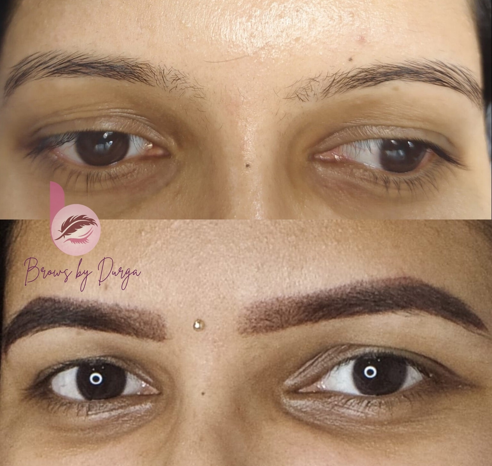

Browlicious treatments
Your features,
refined with care.
Explore natural-looking permanent makeup and restoration treatments. Your consultation is where suitability, shape, pigment and realistic healing are discussed first.
Request a consultation ↗
 01 / BROWS
01 / BROWSBrow artistry
Built for your face.
Not a trend.
Brows are mapped around your natural hair growth, facial balance and preferred level of definition. We select a technique based on your skin and desired finish.
Healing & longevity: brows may look stronger initially and soften during healing. A perfecting session is usually planned around 6–8 weeks; fading varies by technique and skin.
Lips & eyes
More definition.
Less daily effort.
Soft colour and definition are designed to enhance—not mask—your natural features. We discuss your preferred finish and skin history before planning your treatment.
Before booking: let us know about cold sores, eye surgery, skin conditions, medications and recent cosmetic treatments.
 02 / LIPS & EYES
02 / LIPS & EYES
03 / RESTORATIONScalp & paramedical PMU
Artistry with
sensitivity and care.
Restorative work is approached gradually, with an assessment-led plan and an open conversation about what is realistic for your skin and healing.
Please note: treatment suitability varies. Medical clearance may be needed and outcomes depend on skin, scar type and healing.
Your treatment journey
Clear steps. No surprises.
- 01
Consult & assess
Share your goals, treatment history and questions while we check suitability.
- 02
Map & approve
Shape, placement and colour are agreed before the first mark is made.
- 03
Treat & heal
We work in careful layers and provide written aftercare for your healing phase.
- 04
Perfect & refresh
Refine the healed result at your perfecting session and plan maintenance if needed.
Your safety matters
A treatment begins with
an honest yes or no.
We cannot treat active infection, rash or sunburn in the area. Pregnancy, breastfeeding, chemotherapy, uncontrolled diabetes and keloid scarring can also affect suitability. Please share medications, allergies and recent Botox or filler before booking.
Ask a booking question →